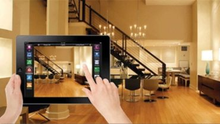

LIGHTING CONTROL

Intelligent lighting control systems are designed to give you a level of command and innovation that goes far beyond the ability to easily adjust the lights in your home.
At the touch of a button you can create the perfect atmosphere by turning on certain lights and dimming them to the perfect level.
CURTAIN CONTROL

Whether it’s curtains, blinds or shutters – you can control it intelligently and precisely. Intelligent curtains and blinds keeps your house cool in summer and can save energy in winter.
Control your blinds or curtains to exactly your needs and really make more of your shading.
> AV CONTROL
Where would we be without quality sound and pictures? The Audio/Video Control Systems make it easy to distribute movies and music to any room in the house. Enjoy your music virtually anywhere & everywhere in your home.
With easy access to your digital music collection, your options are limitless.
VIDEO- DOOR-PHONE

Video door phones are reasonable and easy to use devices that can be installed without any major preparation.
Any visitor who comes to the door will have his picture captured through these video door phones and would get beamed on the screen that would be installed inside homes.